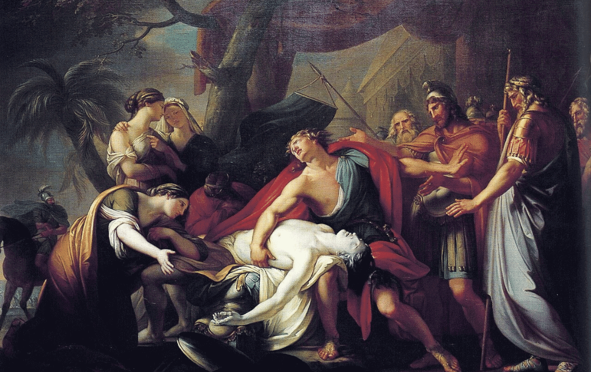

aquilesypatroclo
¿Que relacióntenian Patroclo y Aquiles?

Existen tres posibilidades de cuál era la relación entre patroclo y aquiles las cuales son;
- Pudo ser una relación de parentesco la cual mostraba a patroclo hijo de Menecio, podía ser el primo de Aquiles hijo de Peleo, aunque esto no tiene mucha relevancia, ya que dos primos pueden desconocerse, pueden ser amigos, y pueden llegar a ser amantes.
- Es que fueran amigos íntimos, ya que cuando era pequeño patroclo mató a un niño por accidente, lo que provocó que su padre lo regaló a Peleo, padre de Aquiles, con esto pudo conocer a Aquiles a una temprana edad en donde formaron un fuerte vínculo pase a que patroclo era mayor que Aquiles
- Lo último es que se puede interpretar es que fueron amantes, sobre todo porque eran muy conocidas las prácticas homosexuales en la antigua grecia, lo cual indica dicho romance entre ellos.